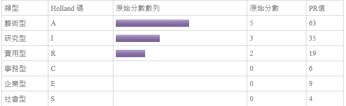

01.個人有興趣的工作介紹
名稱:MIS工程師/軟體工程師
工作要求:需精通java、C、SQL 等等
工作內容:
1. 熟悉 Java 程式語言
2. 熟悉SQL語法
3. 熟悉JavaScript 網頁程式，具有MVC架構開發經驗
4. 完成主管交辦事項等
工作待遇： 月薪 3.5萬 至 4萬元
02.職崖測驗分析
a.職崖測驗HOLLAND碼分析
測出最高前兩項分別為A型和I型
A型介紹
藝術型的人是典型的“創作者”(Creator)，性格特徵為有創意、想像、直覺、獨立、具演藝表達性、跳脫框架限制、不傳統媚俗、理想化、敏銳感性。 在職業性格傾向上，喜歡以自己的感性、情緒、直覺和想像，運用文字、影像、聲音、色彩或動作從事創造力與美之藝術創作，並表現出自我的風格，相對地較缺乏處理文書事務能力。 藝術型的價值觀注重審美與想像力，開放心胸面對各種感覺、見解和周遭人事物，富有勇氣嘗試新的事物而不喜歡受約束，人際互動模式也較為隨興， 在問題解決策略上，依據主觀的印象及想像來覺察問題，以藝術性天份與個人特質(如直觀)來解決問題。 藝術型適合需要敏銳感覺能力、想像力及創造力的工作，其典型職業為：音樂家、詩人、作家、舞台導演、室內設計師、演員、作曲家、指揮家等。
I型介紹
研究型的人是典型的“思辨者”(Thinker)，性格特徵為好奇分析、謹慎條理、理性獨立、謙遜、精確、批判。 在職業性格傾向上，喜歡運用頭腦，善於觀察、思考、分析與推理，依自己的步調追根究底、解決問題，不喜歡他人給予指引，做事時能夠提出新的想法與策略，但對實際解決問題的細節較無興趣，喜歡與符號、概念、文字有關的工作，不必與人有太多的接觸或運用體力的工作類型。 研究型的人的價值觀是自由不守舊的，對嶄新見解和經驗持開放態度，且擁有廣泛的興趣，不是很在乎別人看法，喜歡和有相同興趣或專業的人討論，否則還不如自己看書思考。 在問題解決策略上，會尋找具挑戰性的問題，仰賴於思考、蒐集資訊和細心分析，以得到與學術性事務相關的客觀資料；較少留心個人感受或社會環境。 研究型適合從事需要數理及科學能力，而較不需要人際領導能力的工作，其典型職業為：工程師、化學家、數學家、物理學家、地質學家、醫學家、心理學家、營養師、獸醫、藥劑師等。
依照此測驗結果，我最適合的工作類型為資訊及藝文
b.16種職涯類型分數分析

這邊的結果最高的兩項也是資訊及藝文，不過我大學並不是讀藝文類，所以未來職業選擇可能會選資訊類型才好找工作。
03.自傳履歷
依據我的職崖測驗結果，我是偏向I型的研究人，所以資訊類型工作會比較適合我，本身體能體力超差，資訊類型工作既不用到處奔波搬重物，又可以整天坐著吹冷氣，再加上性格上我不喜歡受人指揮，也不喜歡去太著重於人際關係，所以個人覺得舔工程是這個工作非常適合我，在未來也會努力修課，使得自己的技術更為進步，並多選修其他不同的課程，增加見聞，使自己的經驗更加豐富。